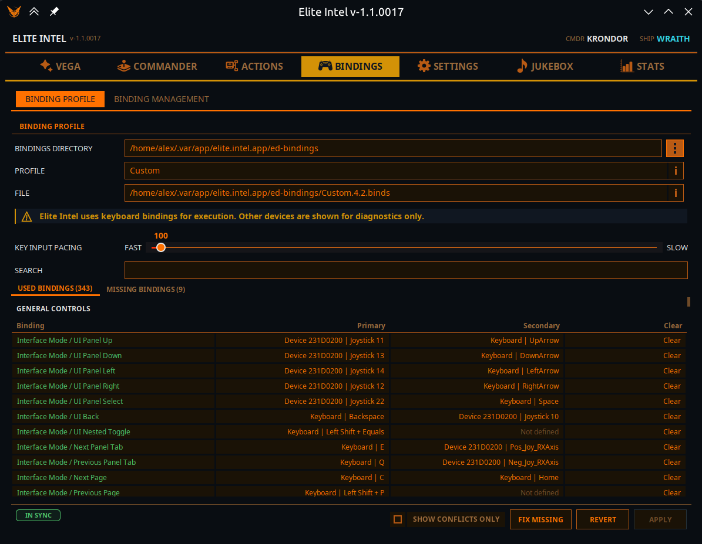
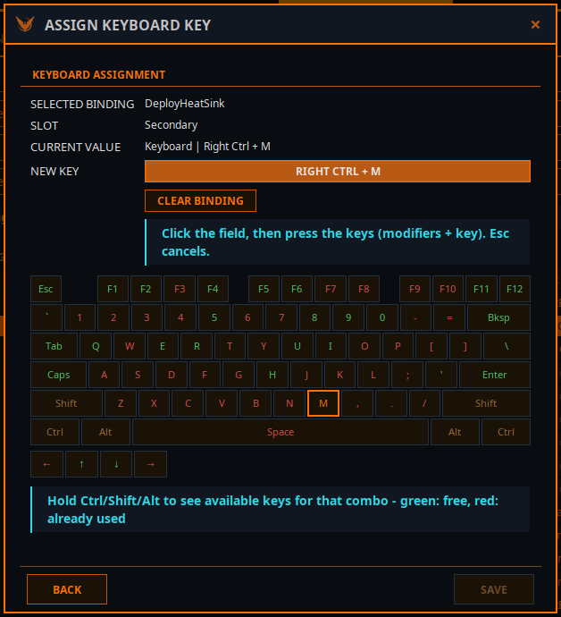
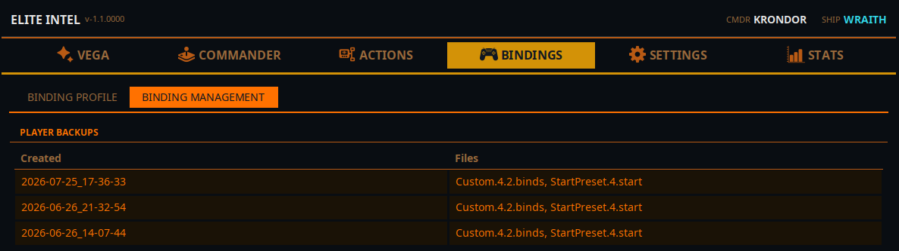

Pestaña Bindings
Elite Intel maneja tu nave pulsando las teclas que Elite Dangerous tiene asignadas. Si un control no tiene binding de teclado, Elite Intel no puede usarlo — aquí es donde lo descubres y lo arreglas.
Dos subpestañas: Perfil de bindings y Gestión de bindings.
Perfil de bindings

Qué archivo se usa
Directorio de Bindings — opcional. Si lo dejas vacío se usa la ubicación estándar de Elite Dangerous; usa el selector ⋮ si tu instalación está en otro sitio. Una carpeta inservible se rechaza y se mantiene el ajuste anterior.
Perfil — detectado automáticamente. Elite Intel lee la entrada StartPreset activa y, si
hace falta, recurre al archivo .binds más reciente.
Archivo — el archivo .binds que se está usando para el diagnóstico y la asignación.
Perfil y Archivo llevan cada uno un ⓘ que explica exactamente cómo se eligió el valor.
¿«No encuentro los bindings» con la carpeta correcta? Elite Dangerous no escribe un archivo
.bindshasta que personalizas algo. Abre Opciones → Controles en el juego, cambia cualquier asignación, y Elite Intel encontrará el archivo.
Ritmo de entrada de teclas
Un deslizador Rápido ↔ Lento para la pausa que Elite Intel hace tras cada pulsación que envía al juego. Rápido es el valor por defecto. Si en un equipo más lento el juego pierde pulsaciones de una secuencia — una macro que se ejecuta a medias, un panel que se abre en la pestaña equivocada —, muévelo hacia Lento.
Las tablas de bindings
Dos pestañas: Bindings usados y Bindings faltantes, cada una con su recuento. Las filas se agrupan bajo los encabezados del propio juego — Controles generales, Controles de nave, Controles de SRV, Controles a pie, Otros controles — en el mismo orden que la pantalla de Controles del juego, para que puedas leer ambas en paralelo.
Buscar acota las dos tablas mientras escribes. Busca en la sección, el grupo, el nombre del
control y la etiqueta .binds original. Mostrar solo conflictos filtra las tablas a los
problemas.
| Columna | Significado |
|---|---|
| Binding | El control |
| Primario / Secundario | Las dos ranuras que Elite Dangerous da a cada control |
| Estado | Faltante · Sin teclado (asignado, pero solo a un mando) · No definido |
| Corrección rápida | Pestaña faltantes: asigna una tecla de teclado libre y segura a este control |
| Borrar | Pestaña usados: quita el binding de teclado (principal, secundario o ambos), sin tocar los de mando y HOTAS |
HOTAS y mandos se muestran pero no se pueden editar. Elite Intel ejecuta mediante bindings de teclado, así que los demás dispositivos aparecen solo para diagnóstico.
Conflictos
Elite Dangerous considera conflicto una combinación solo cuando es exactamente la misma — G y
Mayús+G conviven sin problema. Elite Intel usa la misma regla, así que señala lo que el juego
señala de verdad.
Las filas en conflicto salen en rojo, y al pasar el ratón muestran Comparte tecla con: y la lista — para cada ranura en conflicto, no solo la primera.
También puedes ver Equivalente nave/SRV - muchos lo asignan igual que: en una fila cian. No es un conflicto, es una sugerencia: algunos controles de nave y de SRV se suelen asignar a la misma tecla.
Vega además habla de los bindings que de verdad rompen algo, y nombra las teclas en el registro de diagnósticos:
- El movimiento del mapa galáctico y la navegación de la interfaz en la misma tecla. Trazar rutas no funcionará hasta que el mapa y la interfaz tengan teclas separadas.
- Un control en tu tecla del menú del juego. Elite abre el menú del juego con cualquier combinación que termine en esa tecla, así que el control no se puede pulsar nunca. La solución es borrar la asignación del menú del juego en el juego — Escape abre ese menú de todos modos.
- Un control en una combinación que el sistema operativo captura antes (como Alt+F4). Pulsarla cierra el juego o te saca de la sesión.
Editar un binding
Haz clic en una ranura para abrir el diálogo de asignación.

Muestra el binding seleccionado, la ranura y el valor actual. Luego haz clic en el campo y pulsa las teclas que quieras — modificadores y tecla a la vez. Esc cancela. Se admiten combinaciones de hasta tres modificadores.
Un mapa del teclado en vivo muestra qué hay libre: mantén Ctrl/Mayús/Alt para ver las teclas libres para esa combinación — verde es libre, rojo ya está en uso. Las teclas reservadas (la del menú del juego, Alt+F4, Ctrl+Alt+F en Linux) aparecen marcadas y no se pueden asignar.
Borrar binding quita la asignación.
Autoasignar bindings faltantes
Un botón que asigna teclas seguras y compatibles con tu distribución de teclado a todos los controles sin binding de teclado.
- Las asignaciones existentes nunca se cambian.
- Ninguna tecla se reutiliza.
- Los cambios van solo al borrador — revísalos y luego aplica.
Informa de lo que hizo, y de lo que omitió y por qué: ambas ranuras ya en un mando, sin teclas seguras libres o sin ranura editable de forma segura. Dos controles se dejan sin asignar a propósito: el menú del juego (Escape ya lo abre) y expulsar toda la carga (vacía la bodega al espacio y ningún comando de Elite Intel lo pulsa — asígnalo a mano si lo quieres).
Borrador, Aplicar, Revertir
Los cambios no van directos a Elite Dangerous. Se acumulan en un borrador, y la insignia muestra Borrador o Sincronizado. El mismo estado aparece en el indicador Mapa de teclas de la pestaña Vega.
| Botón | Qué hace |
|---|---|
| Aplicar | Escribe el borrador en tu archivo .binds, guardando antes una copia del anterior |
| Revertir | Descarta el borrador y recarga desde el archivo del juego |
Tras aplicar, abre y cierra la pantalla de Controles en Elite Dangerous. El juego solo vuelve a leer sus asignaciones al abrir esa pantalla. Vega también te lo dice en voz alta.
Si el archivo de bindings del juego cambió después de crear tu borrador, Aplicar se niega y te pide que recargues o descartes antes, en vez de sobrescribir en silencio el cambio de otro.
Si cierras la app con un borrador sin aplicar, se te pregunta si quieres Aplicar al juego, Mantener borrador o Descartar.
Gestión de bindings

Copias de seguridad del jugador — instantáneas que haces tú con Copiar ahora, listadas por fecha (Creada) y los Archivos que contiene cada una. Haz una antes de experimentar.
(Aparte, cada Aplicar guarda antes en silencio una copia del archivo del juego en
elite-intel/bindings/backups/. Son una red de seguridad y no se listan aquí.)
| Botón | Qué hace |
|---|---|
| Restaurar al borrador | Carga la copia en tu borrador, para que la revises antes de que toque el juego |
| Restaurar en vivo | La carga y la aplica directamente al juego. Las comprobaciones de seguridad habituales se siguen haciendo |
| Eliminar copia de seguridad | Elimina la copia para siempre |
Todas preguntan antes. Las dos restauraciones sustituyen los cambios sin guardar del borrador actual.
Community 👉Matrix👈